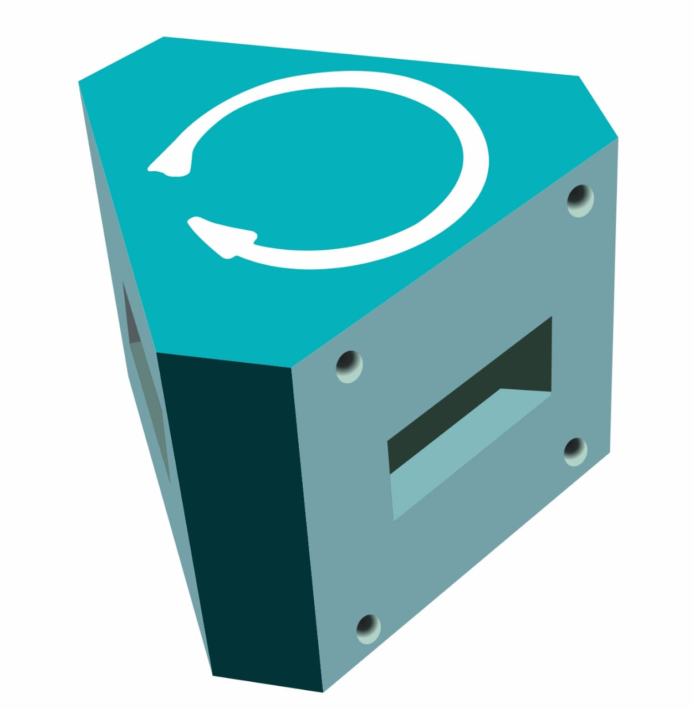
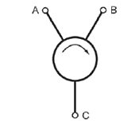
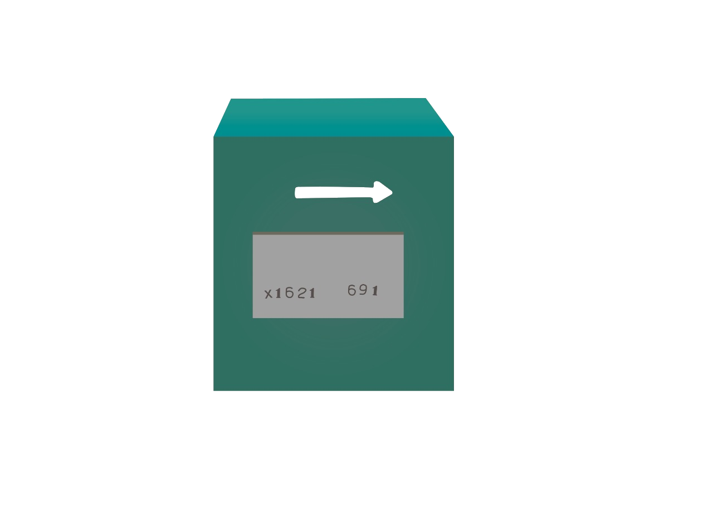
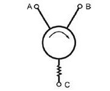
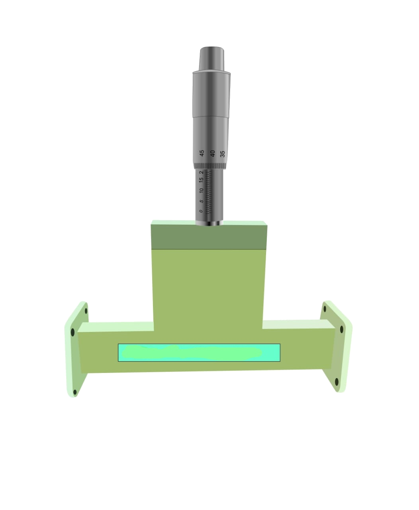
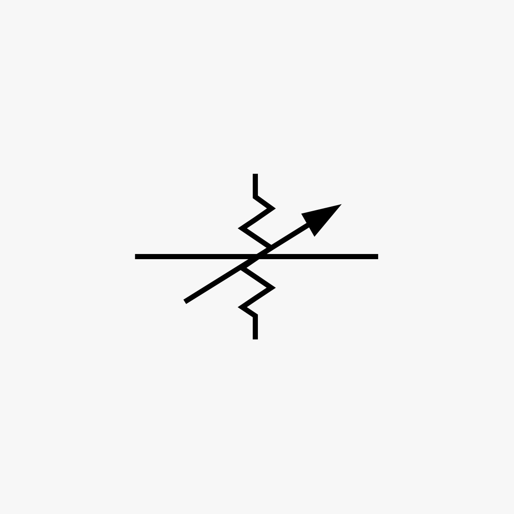
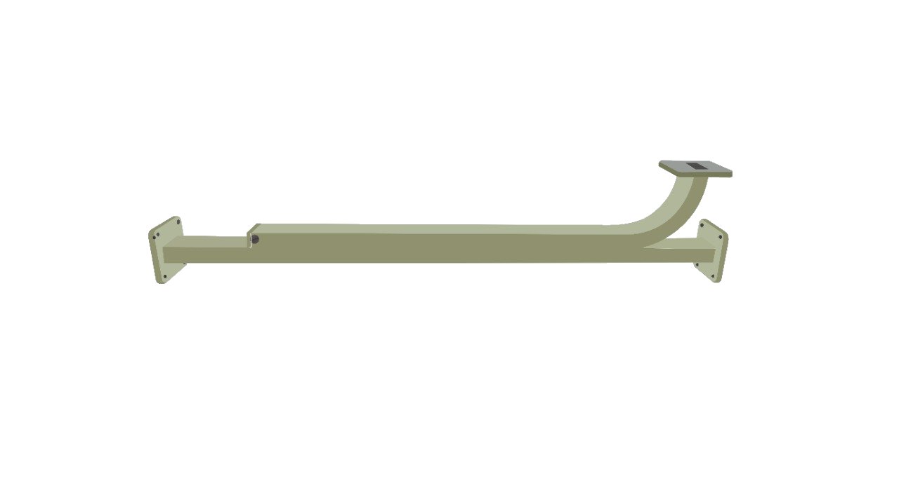
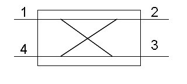

Name of equipment
Circulator
Symbol

Function
A circulator is a device that transports radio frequency or microwave signals from one port to another.
They typically have three ports.
Circulators can be made to circulate clockwise or counterclockwise.

Name of equipment
Isolator
Symbol

Function
It transmits microwave or radio frequency power in one direction only.
It is used to shield equipment on its input side, from the effects of conditions on its output side; for example, to prevent a microwave source being detuned by a mismatched load.

Name of equipment
Attenuator
Symbol

Function
It decreases the strength of the input signal either continuously or step by step without appreciable signal distortion while substantially maintaining constant impedance match.
Name of equipment
Magic Tee
Symbol
Function
A magic-tee, or hybrid tee, is a 4-port waveguide structure that behaves as an electric field and magnetic field 3dB coupler, and is in fact, a combination of E-plane and H-plane tees.
The magic-tee can be used as a power combiner or divider, depending on the needs of the application

Name of equipment
Directional Coupler
Symbol

Function
The basic function of a directional coupler is to operate on an input so that two output signals are available. However, when the input is applied to the opposite port of an internally terminated coupler, only one output signal is produced
Name of equipment
Horn Antenna
Symbol
Function
A horn antenna is used to transmit radio waves from a waveguide (a metal pipe used to carry radio waves) out into space, or collect radio waves into a waveguide for reception
.png)
.png)
.jpeg)
.jpeg)